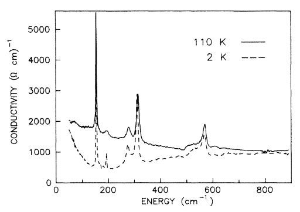

Efectos polarónicos en superconductores basados en cobre a partir de un modelo Peierls-Hubbard de tres sitios.
Examen para obtener el grado de Doctor en Ciencias en la Especialidad de Física Aplicada presentado por:
Andrés García Saravia Ortiz de Montellano
Director de tesis:
Dr. José Mustre de León
14 de Febrero de 2015
Introducción

Debajo de $T_c$:
- Cero resistencia eléctrica
- Expulsión del campo magnético interior (efecto Meissner)
Explicación teórica
Baja $T_c$
Teoría BCS (1957)
Asume una interacción atractiva entre electrones.
Esta interacción está mediada por fonones
(vibraciones de la red cristalina).
Estos electrones forman pares
(pares de Cooper)
Predice una $T_c$ máxima de $\sim 30 - 40$ K.
Alta $T_c$
$T_c$ demasiado alta para BCS convencional.
¿Qué es lo forma los pares de carga?
¿Se puede adaptar la BCS?
No existe una explicación teórica satisfactoria
Objetivo
Contribuir a la respuesta de:
- ¿Es aplicable la teoría BCS a los superconductores de alta $T_c$?
- ¿Se pueden tener interacciones atractivas entre cargas con mecanismos diferentes al intercambio de fonones?
Nos enfocamos en las excitaciones polarónicas en los superconductores basados en cobre.
- ¿Pueden los polarones mediar una interacción atractiva entre portadores de carga?
- ¿Cómo se manifiestan las excitaciones polarónicas en las distintas propiedades de estos materiales?
Esquema de la presentación
Resultados experimentales
Resistividad eléctrica
Interacciones $e^--e^-$ fuertes.
Calor específico
Acoplamiento $e^-$-fonón importante.
Efectos isotópicos anómalos
Coeficiente isotópico, $\alpha$:
$T_c\propto M^{-\alpha}$
Para un superconductor convencional: $\alpha=0.5$
La mayoría es atribuíble a los planos superconductores.
Zech et al.. Nature, 371(6499), 681–683. (1994)
Las vibraciones fuera del plano no son harmónicas.
Ruani et al. Physica C: Superconductivity, 226(1-2), 101–105. (1994)
Efecto isotópico en $T^*$
de signo contrario a $T_c$
Rubio Temprano et al.
Physical Review Letters,
84(9), 1990–1993. (2000)
Efecto isotópico contrario
dependiendo de la región
del espacio $k$
Gweon et al.
Nature, 430(6996), 187–90. (2000)
Efecto más pequeño
Douglas et al.
Nature, 446(7133), E5. (2007)
La red cristalina tiene gran importancia en la mayoría de las propiedades
Interacción importante entre portadores de carga y red cristalina
Inhomogeneidades
YBa2Cu3O7-δ

Doble distancia de enlace O(4)-Cu(1)
Mustre de Leon et al.. Physical Review Letters, 65(13), 1675–1678. (1990)
Distorción dinámica
Salkola et al.. Physical Review B, 51(14), 8878–8891. (1995)
Formación de tiras (stripes)
Bianconi et al.. Physical Review Letters, 76(18), 3412–3415. (1996)
Estado electrónico inhomogéneo
Pan et al.Nature, 413(6853), 282–5. (2001)
Salkola et al.Physical Review Letters, 77(1), 155–158. (1996)
Inaplicabilidad de la aproximación
de Born-Oppenheimer
(No se puede separar el movimiento nuclear del electrónico)
Modelo
Hamiltoniano en espacio real con interacciones carga-fonón
$H = H_{el} + H_{ph} + H_{el-ph}$
$ H_{el} = \sum_{\sigma,i=1}^3 E_i n_{\sigma i} + U\sum_{i=1}^3 n_{i\downarrow}n_{i\uparrow} + t\sum_{\sigma} \left(c_{1\sigma}^\dagger c_{2\sigma} + c_{2\sigma}^\dagger c_{3\sigma} + H.c. \right)$
$ H_{ph} = \hbar \omega_{ir}\left(b_{ir}^\dagger b_{ir}+\frac{1}{2}\right) + \hbar \omega_R \left( b_R^\dagger b_R + \frac{1}{2}\right)$
$H_{el-ph} = \tilde{\lambda_{ir}}u_{ir}(n_3 - n_1) + \tilde{\lambda_R} u_R (n_1 + n_3-s_0)$
$u_R \equiv \left(\frac{\hbar}{2 m_R \omega_R}\right)^{1/2}(b_R^\dagger + b_R) = \frac{x_3 - x_1}{\sqrt{2}}$
$ u_{ir} \equiv \left(\frac{\hbar}{2 m_{ir} \omega_{ir}}\right)^{1/2}(b^\dagger_{ir}+b_{ir}) = \frac{ x_1 + x_3 - ( 2 m_O/m_{Cu})x_2}{(2 + 4 m_O/m_{Cu})^{1/2}}$
Elección de los parámetros
- Salto a primeros vecinos: $t=0.5$ eV
- Energías de banda: $E_0=0.5$ eV
Tight-binding (DeWeert, M. et al. (1989). PRB, 39(7), 4235–4248) - Repulsión Coulómbica entre cargas en los sitios O(4) y Cu(1): $U=7$ eV
Constrained density functional (Hybertsen et al. (1989). PRB, 39(13), 9028–9041) - Frecuencia del modo vibracional Raman: $\omega_R=500$ cm$^{-1}$
- Frecuencia del modo vibracional infrarrojo: $\omega_{ir}=612.4$ cm$^{-1}$
Espectroscopía ( Cardona et al. (1988). Solid State Communications, 67(8), 789–793.,
Thomsen et al. (1988). Solid State Communications, 67(11), 1069–1072.) - Acoplamiento carga-red con el modo Raman: $\lambda_R=0$.
- Acoplamiento carga-red con el modo infrarrojo: $\lambda_{ir}=$?
Distorciones dinámicas del cúmulo
La diferencia de distancias de enlace ($d$) en términos de la coordenada fonónica ($u_{ir}$)
$d=\sqrt{2}\left(1 + 2\frac{m_O}{m_{Cu}} \right)^{1/2}u_{ir}$
Hallamos la probabilidad de hallar al sistema en el estado base con distintos valores de $u_{ir}$

Distorción estática
Distorción dinámica
Sin distorción
El valor $\lambda_{ir}=0.1263$ eV reproduce la distorción dinámica observada por EXAFS
Este observación permite establecer un valor para $\lambda_{ir}$
Energía de formación bipolarónica
Energía del estado base: $\omega_g(\lambda_{ir})$
Energía de formación bipolarónica: $\Delta\omega_g = \omega_g(\lambda_{ir}) - \omega_g(\lambda_{ir}=0)$
$\Delta\omega_g(\lambda_{ir}=0.1263$ eV$) \sim 38$ meV
Experimental: $\sim 45$ meV
Demsar et al. Physical Review Letters, 82(24), 4918–4921. (1999)
Excitaciones infrarrojas
Clasificación de las excitaciones
Con $\lambda_{ir}=0$, $H=H_{el}+H_{ph}$ tiene eigenestados de la forma
$$\left|\psi\right\rangle = |\psi_{el}\rangle|\psi_{ph}\rangle$$
Siendo $|\psi_{el}\rangle$ y $|\psi_{ph}\rangle$ eigenestados de $H_{el}$ y $H_{ph}$ respectivamente.
Una excitación fonónica:
$$|\psi\rangle=|0_{el}\rangle|\psi_{ph}\rangle$$
con $|0_{el}\rangle$ el estado base de $H_{el}$.
Una excitación electrónica:
$$|\psi\rangle=|\psi_{el}\rangle|0_{ph}\rangle$$
Con $|0_{ph}\rangle$ el estado base de $H_{ph}$
Para $\lambda_{ir}>0$ los eigenestados ya no tienen la forma $|\psi_{el}\rangle|\psi_{ph}\rangle$
Sin embargo siguen siendo mayormente electrónicos o fonónicos para $\lambda_{ir}$ pequeños
Espectro infrarrojo
Resumen espectro infrarrojo
- Se reproduce el resultado experimental
- Se observa un hombro en el modo infrarrojo
- Renormalización de las vibraciones con $\lambda_{ir}\gg 1$
Excitaciones electrónicas
- Decremento de energías.
- Estabilización a $\lambda_{ir}$ grandes.
Projección en estados de ocupación definida
Projección en coordenadas fonónicas
Resumen de las excitaciones electrónicas
- Tunelamiento entre dos configuraciones
distorcionadas para $\lambda_{ir}$ intermedio. - Similar al estado base.
- Localización parcial y dinámica de la carga
García Saravia Ortíz de Montellano, A. & Mustre de León, J.
Journal of Superconductivity and Novel Magnetism (2013), 27(4), 991–994.
Efectos isotópicos
Modos normales de vibración:
$$\omega_{R}= \sqrt{\frac{k}{m_O}}$$
$$\omega_{ir} = \sqrt{\frac{k(m_{Cu}+2m_O)}{m_Om_{Cu}}}$$
Constantes de acoplamiento adimensionales:
$$\lambda_R=\tilde{\lambda_R}\left(\frac{\hbar}{2m_R\omega_R}\right)^{1/2}$$
$$\lambda_{ir}=\tilde{\lambda_{ir}}\left(\frac{\hbar}{2m_{ir}\omega_{ir}}\right)^{1/2}$$
Energía de formación bipolarónica
$$\Delta_g=\frac{\Delta\omega_g(O^{16})-\Delta\omega_g(O^{18})}{\Delta\omega_g(O^{16})}$$
$\Delta\omega_g$ es la diferencia de energía del estado base en el sistema acoplado ($\lambda_{ir}>0$)
con el estado base en el sistema sin acoplar ($\lambda_{ir}=0$).
¿Medición experimental?
Excitaciones infrarojas
$$\Delta_i=\frac{\omega_i(O^{16})-\omega_i(O^{18})}{\omega_i(O^{16})}$$
$\omega_i$ es la diferencia de energía entre el estado excitado y el estado base.
Efectos isotópicos a $\lambda_{ir}=0.1263$ eV
| Excitación | $\Delta_i$ (%) | Harmónico (%) |
|---|---|---|
| 1 infrarrojo | -5.07 | 3.75 |
| 1 infrarrojo y 1 Raman | 3.36 | 4.65 |
| 2 infrarrojo | 1.17 | 3.75 |
| 3 infrarrojo | 1.40 | 3.75 |
Excitaciones electrónicas
Gweon et al.: efecto isotópico de ~15 meV en
Bi2Sr2CaCu2O8+δ. (ARPES)
Nature (2004), 430(6996), 187–90.
Douglas et al.: hallan efecto isotópico de 0.9±0.4 meV
Nature (2007), 446(7133), E5.
Este modelo predice efecto de 1.6 meV
Resumen de los efectos isotópicos:
- Efectos isotópicos diferentes a la predicción harmómica en acoplamientos intermedios.
- Evidencia de comportamiento polarónico en el primer estado excitado.
- Diferentes efectos isotópicos dependiendo de la excitación
- Efecto isotópico negativo pero pequeño en la excitación electrónica.
García Saravia Ortíz de Montellano, A. & Mustre de León, J.
Journal of Superconductivity and Novel Magnetism (2014), 1(6–10).